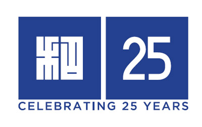

Sponsors
This whole event is possible only because of the generous help offered to us by the following organizations. These organizations are not just generous to us, but are generous to any who are looking for resources into Japan or Japanese related activites in New York City. So please, check our their website and their activities!
-
Amnet
-
Donald Keene Center
 -
Ito En
-
Japan Flix
-
JTB Travel
-
KDDI America, Inc.
-
Kikkoman

-
Mainichi Communications USA

-
Otafuku Sauce

-
Yamachan Ramen

We would also like to extend our deepest appreciation for our local sponsors: Book Culture, Famiglia, M2M, Mills Korean, and University Housewares .
Sponsored [in part] by the Arts Initiative at Columbia University. This funding is made possible through a generous gift from The Gatsby Charitable Foundation.